Essay yozildi. Kim tekshiradi?
O‘qituvchidan javob kunlab keladi. Bu orada siz yangi essay yozasiz — va o‘sha xatolarni yana takrorlaysiz.
IELTS Writing va Speaking · Telegram bot
Essay yoki ovozli javobingizni yuboring. 2–4 daqiqada Bandzilla har bir xatoni topadi, tuzatib beradi va nega xato ekanini tushuntiradi. Ball — IELTS imtihonchilari ishlatadigan 4 mezon bo‘yicha.
@bandzilla_bot · Telegram’da ochiladi
Tanish holatmi?
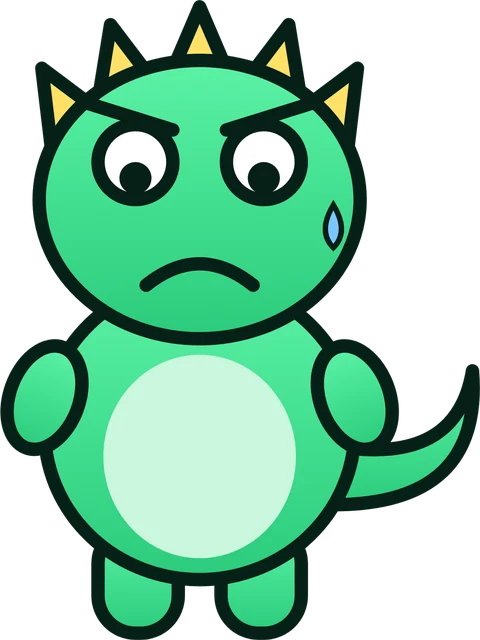
O‘qituvchidan javob kunlab keladi. Bu orada siz yangi essay yozasiz — va o‘sha xatolarni yana takrorlaysiz.
Ko‘zgu oldida gapirasiz. Lekin ravonlik, talaffuz va grammatikangizni kim baholaydi?
“6.0” degan raqam nimani tuzatishni aytmaydi. Qaysi gap, qaysi so‘z ballni tushirayotganini bilmaguncha, ball joyidan qimirlamaydi.
Bandzilla — cho‘ntagingizdagi IELTS murabbiyi. 24/7, Telegram’da, javob 2–4 daqiqada. Xatoga kuladi — sizga emas.
Hoziroq sinab ko‘rishNamuna hisobot
Har bir tekshiruvdan keyin rangli PDF hisobot keladi. Quyida uning bir qismi — belgilangan so‘zlarni bosing va izohni o‘qing 👇
Technology and modern life
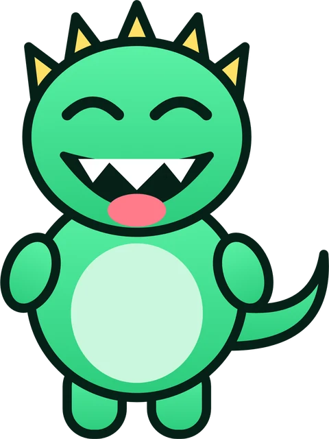
In recent years, technology has become deeply embedded in almost every aspect of daily life. While some people believe this has made our lives unnecessarily complicated, others argue that it has genuinely simplified how we live and work. This essay will discuss both views before presenting my own opinion.
On one hand, critics point out that constant connectivity often leads to stress and information overload. Furthermore, the rapid pace of technological change mean1 that people must continuously learn new systems, which the older people especially find2 overwhelming.
On the other hand, supporters of technology highlight the enormous convenience it provides. Tasks that once took hours, such as paying bills, can now be completed in second3. …
Ball qanday qo‘yiladi? IELTS imtihonchilari ishlatadigan Band Descriptors bo‘yicha: 4 mezon, 0–9 shkala. Har bir mezon 3 marta alohida baholanadi va o‘rtadagi ball olinadi.
O‘z essayimni tekshirish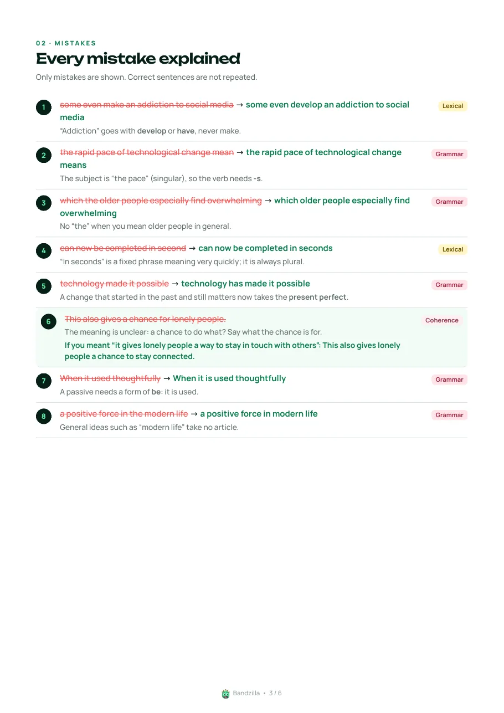
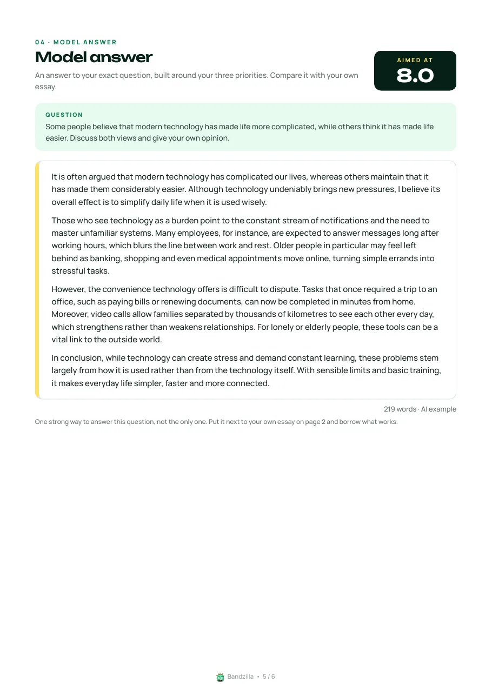
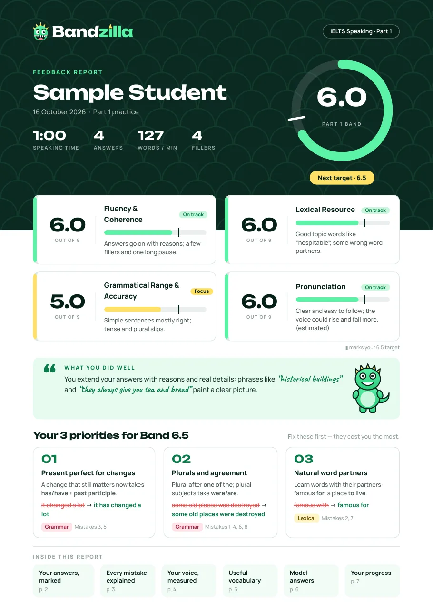
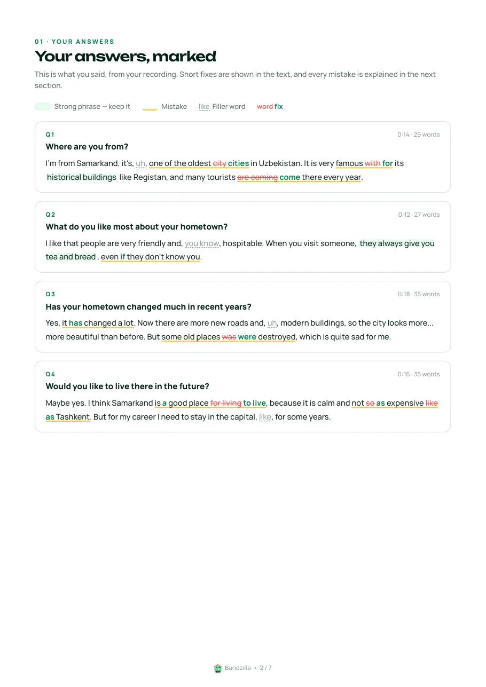
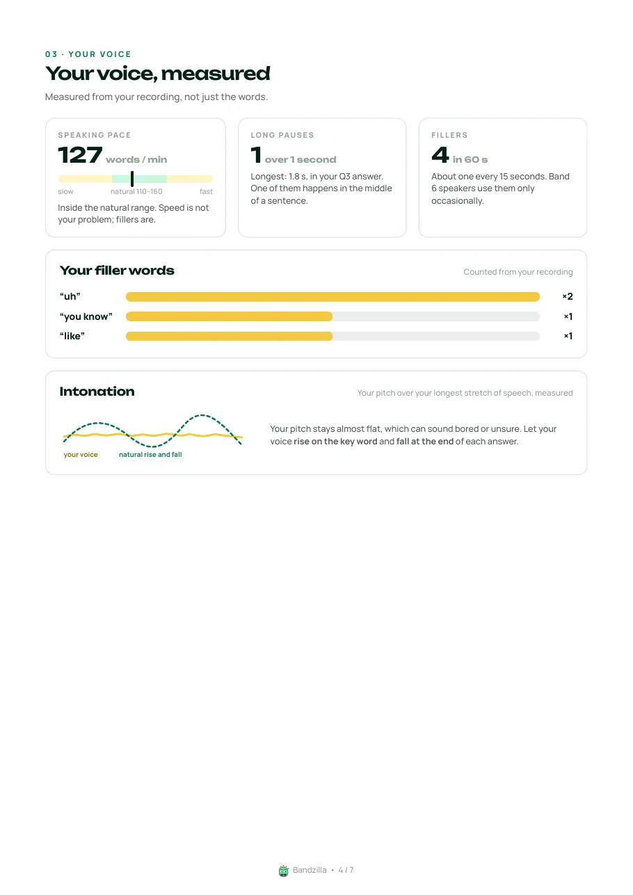
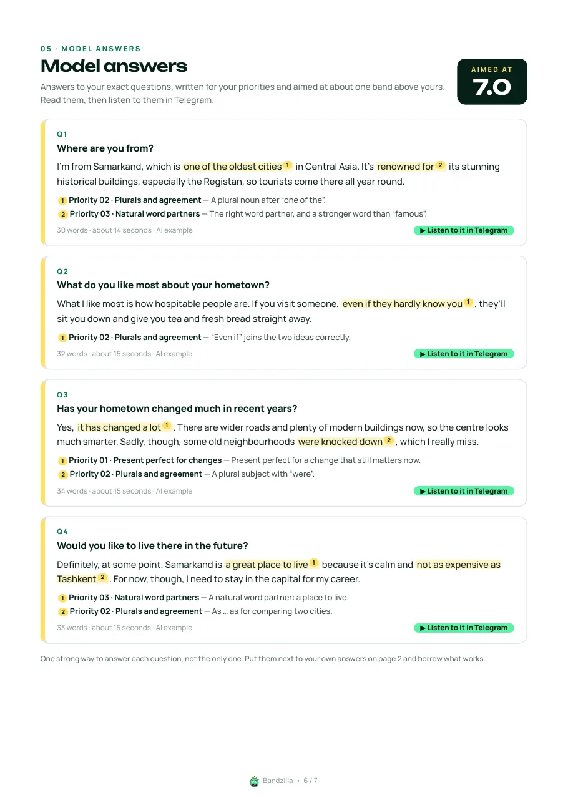
Speaking
Bandzilla savollarni birma-bir beradi, siz ovozli xabar bilan javob berasiz. Oxirida barcha javoblaringiz birga baholanadi va bitta hisobot keladi.
O‘z savolingizni yuboring yoki Practice’dan tayyorini oling. To‘liq testda uchala part — bitta hisobotda.
1 daqiqa tayyorgarlik, keyin 1–2 daqiqa gapirasiz — imtihondagi kabi.
Talaffuz, sur’at, uzun pauzalar va “parazit” so‘zlar matndan emas, ovozingizning o‘zidan o‘lchanadi.
Fluency & Coherence, Lexical Resource, Grammatical Range & Accuracy va Pronunciation — har biriga alohida.
Qanday ishlaydi
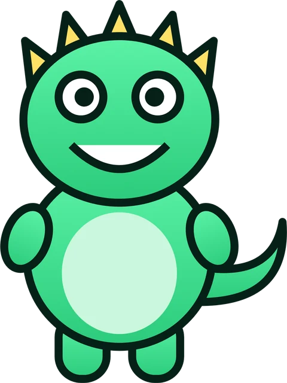
Telegram’da @bandzilla_bot’ni oching va “Start”ni bosing. Tilni tanlang — anketa yo‘q. Shu zahoti 8 coin sovg‘a olasiz.
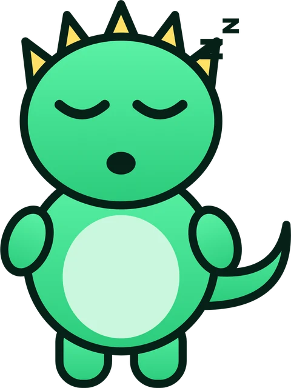
Writing yoki Speaking’ni tanlang. Savol va javobni o‘zingizga qulay shaklda yuboring: matn, rasm, fayl yoki ovoz.
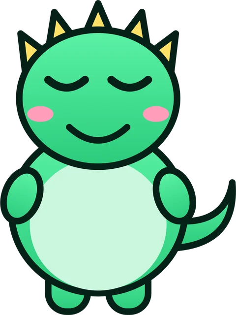
2–4 daqiqada ball, har bir xato izohi, model javob va yangi so‘zlar bilan PDF keladi. Natijangizni do‘stlarga ulashishingiz ham mumkin.
Imkoniyatlar
So‘nggi imtihonlarda tushgan Writing va Speaking savollari, baza muntazam yangilanadi. Bajarganlaringiz ✅ bilan belgilanadi, “Keyingi savol” bilan to‘xtamay mashq qilasiz.
Grafik yoki diagramma rasmini ham yuboring — Bandzilla javobingizdagi har bir raqamni rasmdagi ma’lumot bilan solishtiradi.
Bir bosishda ballingiz yozilgan chiroyli karta — Instagram yoki Telegram’ga joylang.
“Hisobim”da barcha hisobotlaringiz arxivi va ballingiz dinamikasi — rangli statistika kartasida.
Hisobotlardagi foydali so‘zlar “Lug‘atim”ga o‘zi tushadi — tarjimasi bilan. Oraliqli takrorlash, test va kunlik eslatma bilan yodlaysiz.
Tunda ham, imtihon arafasida ham ishlaydi. Bot o‘zbek, rus va ingliz tillarida gaplashadi.
Narxlar
Botga birinchi kirganingizda 8 coin sovg‘a. Keyin har bir tekshiruv uchun coin bilan to‘laysiz — obuna yo‘q, coin muddati tugamaydi.
1 coin = 1 000 so‘m. Coin faqat hisobot tayyor bo‘lganda yechiladi.
Writing
Speaking
Botni sinab ko‘rish uchun
8 coin0 so‘m
Kerakicha oling — katta paketda arzonroq
850–1 000so‘m / coin
| 10 coin | 10 000 so‘m | |
|---|---|---|
| 25 coin | 23 000 so‘m | −8% |
| 50 coin | 45 000 so‘m | −10% |
| 100 coin | 88 000 so‘m | −12% |
| 200 coin | 170 000 so‘m | −15% |
Coin muddatsiz · to‘lov karta orqali
Botda sotib olishTalabalaringiz tekshiruvlarini siz to‘laysiz
720so‘m / coin dan
| 500 coin | 400 000 so‘m | −20% |
|---|---|---|
| 1 000 coin | 780 000 so‘m | −22% |
| 2 500 coin | 1 875 000 so‘m | −25% |
| 5 000 coin | 3 600 000 so‘m | −28% |
Do‘stingizni taklif qiling. U birinchi marta coin sotib olganda ikkalangizga 5 coindan bonus. Havolangiz botdagi “👤 Hisobim” bo‘limida.
To‘lov karta orqali: o‘tkazma qilasiz, chek rasmini botga yuborasiz, tasdiqlangach coinlar hisobingizga tushadi.
O‘qituvchi va o‘quv markazlari uchun
O‘qituvchi sifatida so‘rov yuboring — tasdiqlangach guruh ochasiz. Talabalar taklif havolasi orqali qo‘shiladi, siz esa har birining ishlari soni, o‘rtacha bali va so‘nggi faolligini ko‘rasiz.
Savollar
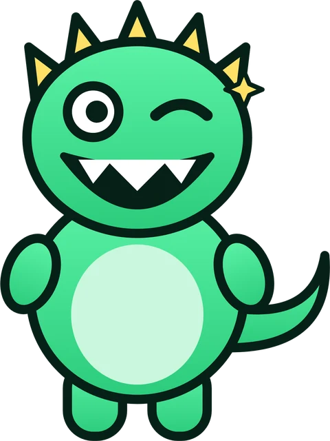
Javob topmadingizmi? Botga yozing — yordam beramiz.
Botga yozishBandzilla IELTS imtihonchilari ishlatadigan rasmiy Band Descriptors bo‘yicha baholaydi: o‘sha 4 mezon, o‘sha 0–9 shkala. Har bir mezon 3 marta alohida baholanadi va o‘rtadagi ball olinadi — shuning uchun natija barqaror. Eng muhimi, har bir ball ortida sabab bor: qaysi gap, qaysi so‘z ballni tushirgani ko‘rsatiladi. Rasmiy IELTS sertifikatini esa faqat imtihon markazi beradi.
Ha. Rasmga olib yuboring — bir nechta sahifa bo‘lsa, albom qilib. Bandzilla matnni o‘qiydi va tekshirishdan oldin sizga ko‘rsatadi: biror so‘zni noto‘g‘ri o‘qigan bo‘lsa, tuzatib yuborasiz.
Odatda 2–4 daqiqada. Bandzilla tahlil qilayotganini yozib turadi va hisobot tayyor bo‘lishi bilan PDF’ni yuboradi.
Part’ni yoki to‘liq testni tanlang, savollarni yuboring (yoki Practice’dan tayyorini oling) va har biriga ovozli xabar bilan javob bering. Video-xabar va audio fayl ham qabul qilinadi.
Writing Task 1 — 4 coin, Task 2 — 5 coin. Speaking Part 1 — 6, Part 2 — 5, Part 3 — 8, to‘liq test (Part 1+2+3 bitta hisobotda) — 16 coin. Coin faqat hisobot tayyor bo‘lganda yechiladi.
Coin paketini olasiz: 10 coin — 10 000 so‘m, 25 — 23 000, 50 — 45 000, 100 — 88 000, 200 — 170 000 so‘m. Coin muddatsiz. To‘lov karta orqali: o‘tkazma qilasiz, chek rasmini botga yuborasiz, tasdiqlangach coinlar hisobingizga tushadi.
Ha. “👤 Hisobim” → “Tarix”da istalgan hisobotni qayta yuklab olasiz, “Statistika”da esa ballingiz qanday o‘sayotganini ko‘rasiz.
Interfeys o‘zbek, rus va ingliz tillarida — birinchi kirishda tanlaysiz, keyin “Hisobim”dan o‘zgartirsa bo‘ladi. Essay va javoblar, albatta, ingliz tilida; PDF hisobot ham ingliz tilida.
Birinchi tekshiruvlar sovg‘a coinlar hisobidan — bepul. Botni oching, bir daqiqada boshlaysiz.
Botni ochish — bepulKompyuterdamisiz? Telefon kamerasi bilan skanerlang